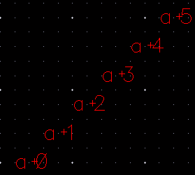
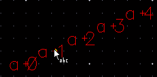
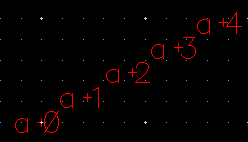

Generating Labels Using Auto Step in Manual Mode
You can use the auto step method to create labels. This method is available only in Manual mode.
To create labels by using the auto step method:
-
In the layout window, choose Create – Label.
The Create Label form opens. - Set the Mode as Manual.
- Type the label pattern in the Label (Pattern) field.
- Select the Step check box in the Auto Step section.
-
From the Step list, if you select Input X&Y:
-
Specify values in the X and Y fields.
All the generated labels attach to the pointer and are visible as per the specified spacing.
-
Click on the canvas to place the labels.If the Keep Label check box in the Label Options section is selected, the label sequence remains attached to the pointer after you click to place the label.
-
Specify values in the X and Y fields.
-
From the Step list, if you select Custom:
The first label attaches to the pointer.- Set up the Snap Mode setting.
-
Click to place the first label in the design display area.
The remaining generated labels attach to the pointer, as shown in the figure.You can move the pointer around to determine the position of the second label. -
Click on the canvas to place the second label.
The remaining labels are placed by using the same spacing as between the first and second placed labels and along the same direction as the first two labels.
-
Press
Escor click Cancel in the form to finish creating labels.
Related Topics
Configuring Label Creation Options
Return to top